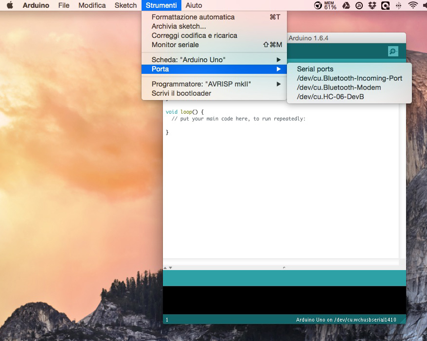
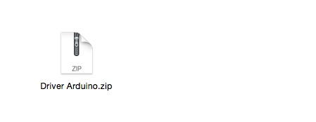
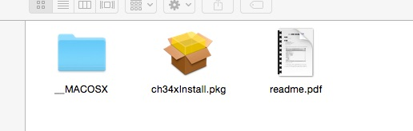
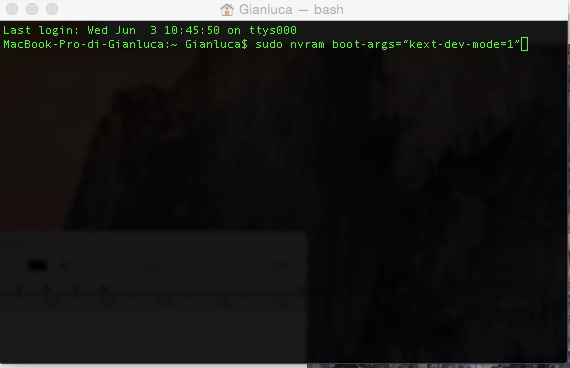
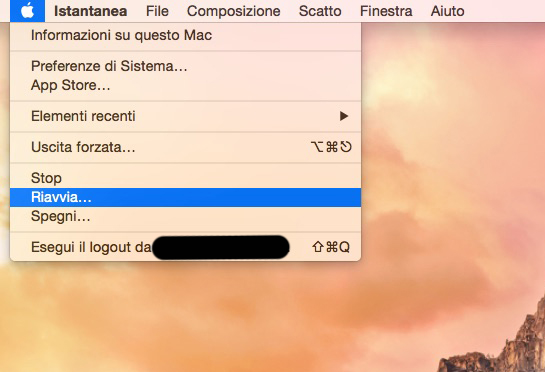

Guida: installare i driver per Arduino Uno compatibile su Mac con OSX Yosemite
Uno dei problemi più diffusi quando si acquista una board Arduino “compatibile” è che il nostro sistema operativo non riconosca i driver usb e quindi la periferica non sia presente nel menù dell’ IDE di Arduino sotto la voce Strumenti -> Porta .
SOLUZIONE: bisogna installare dei driver appositi, che per nostra fortuna sono presenti per Mac, Linux e Windows.
Ecco come fare...
Innanzitutto bisogna scaricare a questo link i drivers e salvarli su nostro computer.
Doppio click sul file appena scaricato (come mostrato nell’immagine precedente). Sul vostro computer verrà creata un cartella dal nome Driver Arduino. Entrateci dentro e troverete tre cartelle rinominate rispettivamente: CH341SER_LINUX, CH341SER_MAC e CH341SER_WIN. ( Gli utenti Apple noteranno una quarta cartella dal nome _MACOSX , non fateci caso! )
Entrate nella cartella CH341SER_MAC e vi troverete 3 file come in figura
Doppio click su ch34xinstall.pkg , seguite le istruzioni e cliccate sempre su continua. Fatto questo arriva la parte più importante per il funzionamento dei nostri driver. Dovrete aprire il terminale, quindi recatevi in Applicazioni -> Utility (la cartella con il cacciavite e la chiave inglese) -> Terminale
Si aprirà una finestra come in foto
Copiate questa istruzione sudo nvram boot-args=“kext-dev-mode=1” e incollatela nel terminale. Premete il tasto INVIO sulla tastiera e vi verrà chiesto di inserire la password di sistema.
Al termine dell’operazione RIAVVIATE il computer.
NOTA BENE: Questa è un’operazione importante per portare al termine correttamente la procedura. Una volta riavviato il computer , collegate prima la scheda Arduino con il cavo usb alla porta del vostro computer e poi aprire l’IDE di Arduino, andate in Strumenti -> Porte e vedrete una porta nuova